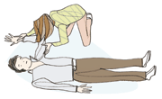
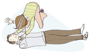
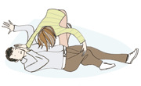
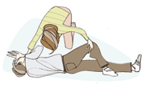
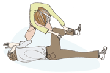
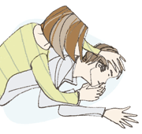

Technique :
Si la victime porte des lunettes, ôtez-les lui. Assurez-vous que ses jambes sont allongées côte à côte. Si ce n'est pas le cas, rapprochez-les délicatement l'une de l'autre de manière à les placer dans l'axe du corps.  Disposez le bras de la victime le plus proche de vous à angle droit de son corps. Pliez ensuite son coude tout en gardant la paume de sa main tournée vers le haut. Placez-vous à genoux ou en trépied à côté de la victime.  Saisissez l'autre bras de la victime d'une main, placez le dos de sa main contre son oreille, de votre côté. Maintenez la main de la victime pressée contre son oreille, paume contre paume.  Attrapez la jambe la plus éloignée de vous avec l'autre main, juste derrière le genou, et relevez-la tout en gardant le pied au sol. Placez-vous assez loin de la victime, au niveau de son thorax, pour pouvoir la tourner sur le côté vers vous, sans avoir à reculer.  Faites rouler la victime en tirant sur sa jambe jusqu'à ce que le genou touche le sol. Dégagez doucement votre main de sous la tête de la victime en maintenant son coude de votre autre main afin de ne pas entraîner sa main et d'éviter ainsi toute mobilisation de sa tête.  Ajustez la jambe située au-dessus de sorte que la hanche et le genou soient à angle droit.  Ouvrez la bouche de la victime d'une main, avec le pouce et l'index, sans mobiliser la tête, afin de permettre l'écoulement des liquides vers l'extérieur. Demandez à quelqu'un d'appeler les secours ou bien allez chercher de l'aide si vous êtes seul. Vérifiez régulièrement que la respiration est normale.